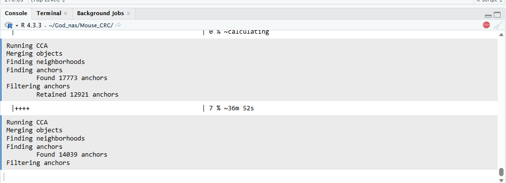
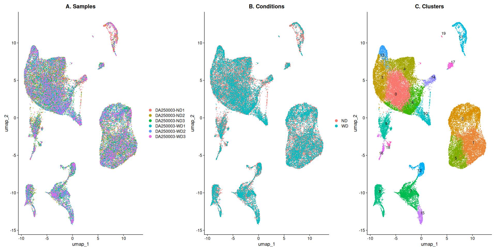
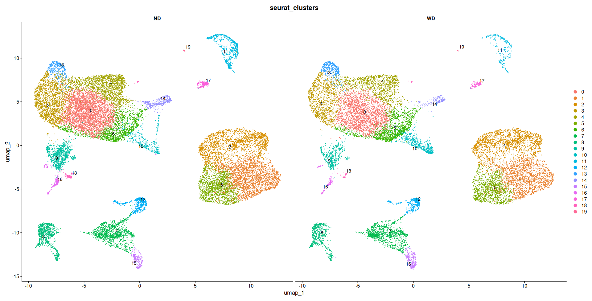
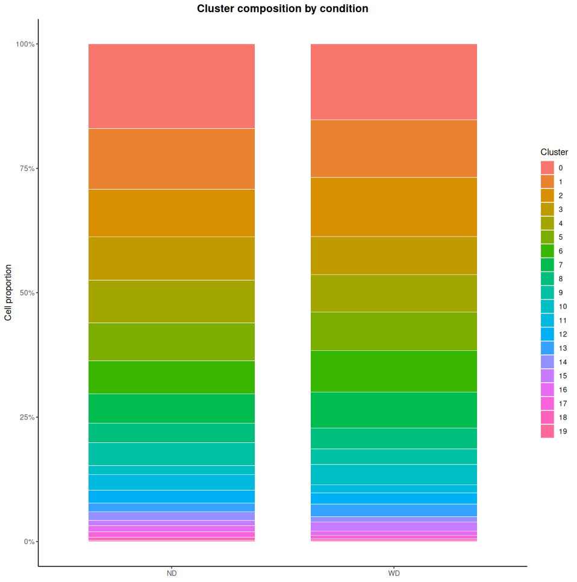

Integration and Batch Correction
Step 04 / 08여러 샘플 또는 여러 배치에서 얻은 scRNA-seq 데이터는 batch effect의 영향을 받을 수 있습니다. Integration은 기술적 차이를 줄이고, 공통된 biological signal을 비교하기 위한 단계입니다.
A) 왜 Integration이 필요한가?
- 샘플이 서로 다른 날짜, 다른 라이브러리 preparation, 다른 operator, 다른 chemistry version에서 생성되면 기술적 차이가 생길 수 있습니다.
- 이 차이가 크면 실제 biological difference보다 batch effect가 더 크게 보일 수 있습니다.
- 이 경우 UMAP에서 샘플별로 분리되어 보이거나, 같은 cell type이 batch마다 따로 cluster될 수 있습니다.
핵심 포인트
- Integration은 biological difference를 없애는 과정이 아니라, 기술적 차이를 줄이는 과정입니다.
- 하지만 잘못 적용하면 실제 biological signal까지 희석할 수 있으므로 주의해야 합니다.
B) 언제 Integration을 고려해야 하나?
| 상황 | 설명 |
|---|---|
| 여러 환자/샘플 비교 | 서로 다른 샘플을 하나의 객체로 비교하려면 batch effect를 먼저 고려해야 합니다. |
| 실험 날짜가 다름 | 같은 조건이어도 날짜 차이, operator 차이, reagent 차이로 batch effect가 생길 수 있습니다. |
| 기술 플랫폼 차이 | 서로 다른 chemistry 또는 protocol에서 생성된 경우 integration이 더 중요해질 수 있습니다. |
| UMAP에서 샘플별 분리 | cell type보다 sample origin이 더 강하게 보이면 integration 필요성을 의심할 수 있습니다. |
C) 언제 조심해야 하나?
- 질환군과 대조군이 biological하게 매우 다를 때, 무리하게 integration하면 중요한 차이가 사라질 수 있습니다.
- 특정 샘플에만 존재하는 rare cell population이 integration 과정에서 희석될 수 있습니다.
- 따라서 integration 전후 결과를 모두 비교하면서 해석해야 합니다.
D) Seurat Integration 기본 흐름
Seurat에서는 각 샘플을 개별적으로 전처리한 뒤, anchor를 찾고 데이터를 통합합니다.
integrated_obj.rds를 불러옵니다.
Step 3에서 이어지는 객체
sample_list에는 ND1~3과 WD1~3의 singlet cell이 저장되어 있으며,
각 객체에 NormalizeData()와 FindVariableFeatures()가 이미 적용되었습니다.
따라서 Step 4에서는 이 과정을 반복하지 않고 바로 integration feature를 선택합니다.
library(Seurat)
# 이전 단계에서 사용하던 6개 sample 이름 확인
names(sample_list)
# 각 sample에서 공통적으로 사용할 integration feature 선택
integration_features <- SelectIntegrationFeatures(
object.list = sample_list,
nfeatures = 2000
)
# sample 사이에서 서로 대응되는 anchor 탐색
anchors <- FindIntegrationAnchors(
object.list = sample_list,
anchor.features = integration_features,
normalization.method = "LogNormalize"
)

FindIntegrationAnchors 실행 화면 예시. CCA, object merging, 이웃 탐색, anchor 탐색과 filtering이 샘플 조합별로 반복됩니다.
- 샘플 수와 세포 수가 많을수록 비교해야 하는 샘플 조합과 계산량이 증가합니다.
- Console에
Running CCA,Finding neighborhoods,Finding anchors등이 반복해서 출력되는 것은 정상입니다. - 진행률과 Console 출력이 계속 갱신되고 있다면 멈춘 것이 아니므로 완료될 때까지 기다립니다.
- 실행 중 RStudio 창을 닫거나 R session을 재시작하면 계산이 중단될 수 있습니다.
소요 시간은 서버의 CPU와 메모리, 세포 수 및 샘플 간 이질성에 따라 달라지므로 화면의 예상 시간은 계속 변할 수 있습니다.
# anchor를 이용하여 하나의 Seurat object로 통합
integrated_obj <- IntegrateData(
anchorset = anchors,
normalization.method = "LogNormalize"
)
SelectIntegrationFeatures()는 6개 샘플의 variable feature 정보를 이용해
통합에 사용할 공통 유전자를 선택합니다. FindIntegrationAnchors()는
샘플 사이에서 유사한 세포 상태를 연결하는 anchor를 찾고,
IntegrateData()는 이 정보를 이용해 batch effect가 보정된
integrated assay를 생성합니다.
E) 통합 결과 확인 및 임시 객체 정리
Integration 과정에서 생성된 anchors는 메모리를 많이 사용할 수 있습니다.
통합이 정상적으로 완료되면 integrated assay를 확인하고,
이후 분석에 필요하지 않은 임시 객체를 제거합니다.
# integrated assay가 생성되었는지 확인
Assays(integrated_obj)
# 이후 사용하지 않는 임시 객체 제거
rm(integration_features, anchors)
# 사용 가능한 메모리 회수 요청
gc()
F) 통합 후 기본 분석
통합된 객체에서는 보통 integrated assay를 기준으로 scaling, PCA, UMAP, clustering을 수행합니다.
DefaultAssay(integrated_obj) <- "integrated"
integrated_obj <- ScaleData(integrated_obj, verbose = FALSE)
integrated_obj <- RunPCA(integrated_obj, npcs = 30, verbose = FALSE)
integrated_obj <- RunUMAP(integrated_obj, dims = 1:20)
integrated_obj <- FindNeighbors(integrated_obj, dims = 1:20)
integrated_obj <- FindClusters(integrated_obj, resolution = 0.5)
G) 최종 실습 객체 검증 및 저장
이번 실습에 사용할 객체는 integration뿐 아니라 scaling, PCA, UMAP 및 clustering까지 완료된 상태로 저장합니다. 저장 위치는 별도 하위 폴더가 아닌 현재 작업 디렉토리입니다.
# 최종 객체 검증
integrated_obj
Assays(integrated_obj)
Layers(integrated_obj[["RNA"]])
Layers(integrated_obj[["integrated"]])
Reductions(integrated_obj)
stopifnot(
ncol(integrated_obj) == 39167,
anyDuplicated(colnames(integrated_obj)) == 0,
"pca" %in% Reductions(integrated_obj),
"umap" %in% Reductions(integrated_obj),
"seurat_clusters" %in% colnames(integrated_obj@meta.data)
)
# 현재 작업 디렉토리에 저장
getwd()
saveRDS(
integrated_obj,
file = "integrated_obj.rds",
compress = FALSE
)
# 저장 여부와 파일 크기 확인
file.exists("integrated_obj.rds")
file.info("integrated_obj.rds")$size / 1024^3
실제 저장된 실습 객체
- 32,930 features와 39,167 cells
- RNA 및 integrated assay
- PCA와 UMAP reduction
- resolution 0.5에서 생성된 20개 cluster
- ND 22,673 cells, WD 16,494 cells
H) Harmony 기반 보정 예시
Harmony는 PCA 공간에서 batch effect를 줄이는 접근입니다. Seurat integration과 함께 자주 비교되는 방법입니다.
library(Seurat)
library(harmony)
# Harmony는 먼저 sample을 하나의 RNA assay 객체로 병합
harmony_obj <- merge(
x = sample_list[[1]],
y = sample_list[-1],
add.cell.ids = names(sample_list),
project = "Mouse_CRC"
)
harmony_obj <- NormalizeData(harmony_obj)
harmony_obj <- FindVariableFeatures(
harmony_obj,
selection.method = "vst",
nfeatures = 2000
)
harmony_obj <- ScaleData(harmony_obj)
harmony_obj <- RunPCA(harmony_obj, npcs = 30)
# orig.ident를 sample/batch 변수로 사용
harmony_obj <- RunHarmony(
harmony_obj,
group.by.vars = "orig.ident"
)
harmony_obj <- RunUMAP(
harmony_obj,
reduction = "harmony",
dims = 1:20
)
harmony_obj <- FindNeighbors(
harmony_obj,
reduction = "harmony",
dims = 1:20
)
harmony_obj <- FindClusters(
harmony_obj,
resolution = 0.5
)
condition을 batch 변수로 보정하면 실제 조건 차이가 제거될 수 있습니다.
Harmony의 group.by.vars에는 샘플을 구분하는
orig.ident와 같은 기술적 batch 변수를 사용합니다.
H-1) Integration 결과 확인
Integration이 잘 되었는지는 반드시 전후 UMAP을 비교해서 확인해야 합니다.
# sample별 mixing 확인
DimPlot(
integrated_obj,
reduction = "umap",
group.by = "orig.ident"
)
# biological condition 분포 확인
DimPlot(
integrated_obj,
reduction = "umap",
group.by = "condition"
)
# cluster 구조 확인
DimPlot(
integrated_obj,
reduction = "umap",
label = TRUE
)
위 코드는 UMAP과 clustering을 수행한 다음 단계에서 실행합니다.
orig.ident로 샘플 간 mixing을 확인하고,
condition으로 ND와 WD의 분포가 과도하게 소실되지 않았는지 함께 평가합니다.

Integration은 서로 다른 batch 또는 sample 간 기술적 차이를 줄여, 공통된 cell type 구조를 더 잘 비교할 수 있도록 돕습니다.
H-2) 해석 시 주의할 점
- batch effect가 줄어들었다고 해서 무조건 좋은 결과는 아닙니다.
- 실제 biological difference까지 없어졌는지 함께 확인해야 합니다.
- cell type marker, sample distribution, known biology를 함께 점검해야 합니다.
- 분석 목적이 “통합 atlas 구축”인지, “조건 차이 비교”인지에 따라 integration 전략이 달라질 수 있습니다.
실전 팁
- 항상 integration 전 raw/standard workflow 결과도 함께 보관하세요.
- UMAP만 보지 말고, marker gene가 자연스럽게 유지되는지 확인해야 합니다.
- 샘플 간 mixing이 좋아 보여도, rare population이 사라지지 않았는지 확인하는 것이 중요합니다.
I) 실습용 전체 코드 예시
Anchor 탐색과 integration에 약 20분 이상이 필요하고, 3개 서버의 여러 계정에서 동시에 실행하면 서버 부하가 커질 수 있습니다. 따라서 미리 처리한
integrated_obj.rds를 불러와
시각화와 후속 분석을 진행합니다.
이전 단계에서 생성된 객체와 임시 변수를 모두 제거하여 깨끗한 R environment에서 시작합니다.
아래의 rm(list = ls())는 현재 R session의 객체를 모두 삭제하므로,
저장하지 않은 분석 결과가 있다면 먼저 저장해야 합니다.
# 1. 현재 R environment의 모든 객체 제거
rm(list = ls())
gc()
# 2. 실습 작업 디렉토리 설정
setwd("~/God_nas/Mouse_CRC")
getwd()
# 3. 분석 패키지 불러오기
library(Seurat)
library(ggplot2)
library(patchwork)
# 4. 현재 디렉토리의 통합 객체 존재 여부 확인
file.exists("integrated_obj.rds")
# 5. 미리 처리된 통합 객체 불러오기
integrated_obj <- readRDS(
"integrated_obj.rds"
)
# 6. 객체 구조 확인
integrated_obj
Assays(integrated_obj)
Reductions(integrated_obj)
table(integrated_obj$condition)
table(integrated_obj$seurat_clusters)
# 7. 저장된 PCA와 UMAP 확인
stopifnot(
ncol(integrated_obj) == 39167,
anyDuplicated(colnames(integrated_obj)) == 0,
"pca" %in% Reductions(integrated_obj),
"umap" %in% Reductions(integrated_obj),
"seurat_clusters" %in% colnames(integrated_obj@meta.data)
)
# 8. integrated assay를 기본 분석 assay로 지정
DefaultAssay(integrated_obj) <- "integrated"
# 9. 샘플별 UMAP
p_sample <- DimPlot(
integrated_obj,
reduction = "umap",
group.by = "orig.ident",
pt.size = 0.1
) +
ggtitle("A. Samples") +
theme(
plot.title = element_text(
face = "bold",
hjust = 0.5
)
)
# 10. 조건별 UMAP
p_condition <- DimPlot(
integrated_obj,
reduction = "umap",
group.by = "condition",
pt.size = 0.1
) +
ggtitle("B. Conditions") +
theme(
plot.title = element_text(
face = "bold",
hjust = 0.5
)
)
# 11. cluster별 UMAP
p_cluster <- DimPlot(
integrated_obj,
reduction = "umap",
group.by = "seurat_clusters",
label = TRUE,
repel = TRUE,
pt.size = 0.1
) +
NoLegend() +
ggtitle("C. Clusters") +
theme(
plot.title = element_text(
face = "bold",
hjust = 0.5
)
)
# 12. 세 개의 UMAP을 하나의 figure로 통합
umap_overview <-
p_sample +
p_condition +
p_cluster +
plot_layout(ncol = 3)
umap_overview
# 13. UMAP overview 저장
ggsave(
filename = "Step4_integrated_UMAP_overview.png",
plot = umap_overview,
width = 16,
height = 5.5,
dpi = 300,
bg = "white"
)
# 14. ND와 WD를 나누어 cluster 분포 확인
condition_umap <- DimPlot(
integrated_obj,
reduction = "umap",
group.by = "seurat_clusters",
split.by = "condition",
label = TRUE,
repel = TRUE,
pt.size = 0.1,
ncol = 2
)
condition_umap
# 15. cluster별 조건 구성비 계산
cluster_condition_df <- as.data.frame(
table(
cluster = integrated_obj$seurat_clusters,
condition = integrated_obj$condition
)
)
cluster_condition_df <- cluster_condition_df |>
dplyr::group_by(condition) |>
dplyr::mutate(
proportion = Freq / sum(Freq)
) |>
dplyr::ungroup()
# 16. 조건별 cluster 구성비 시각화
cluster_composition <- ggplot(
cluster_condition_df,
aes(
x = condition,
y = proportion,
fill = cluster
)
) +
geom_col(
width = 0.75,
color = "white",
linewidth = 0.2
) +
scale_y_continuous(
labels = scales::percent_format()
) +
labs(
x = NULL,
y = "Cell proportion",
fill = "Cluster",
title = "Cluster composition by condition"
) +
theme_classic() +
theme(
plot.title = element_text(
face = "bold",
hjust = 0.5
)
)
cluster_composition

샘플, 조건 및 Seurat cluster 기준의 통합 UMAP 결과
왼쪽 그림에서는 6개 샘플의 세포가 같은 cluster 안에서 비교적 고르게 섞이는지 확인합니다. 가운데 그림에서는 ND와 WD 세포의 전체 분포를 비교하고, 오른쪽 그림에서는 resolution 0.5에서 생성된 0~19번 cluster의 위치와 분리 정도를 확인합니다.

동일한 UMAP 좌표를 ND와 WD 조건으로 나누어 표시한 결과
두 panel은 같은 UMAP 좌표계를 사용하므로 각 cluster의 조건별 세포 분포를 직접 비교할 수 있습니다. 대부분의 cluster가 두 조건 모두에서 관찰되는지, 특정 조건에서 상대적으로 많거나 적어 보이는 cluster가 있는지를 탐색적으로 확인합니다.

ND와 WD 조건 내부에서 각 cluster가 차지하는 세포 비율
각 막대의 전체 높이는 100%이며 색상별 영역은 해당 조건에서 각 cluster가 차지하는 비율입니다. UMAP에서 관찰한 조건별 차이를 정량적인 구성비 관점에서 다시 확인할 수 있습니다. 다만 이 그림은 개별 세포를 기준으로 계산한 기술통계이므로, 조건 간 유의한 차이는 생물학적 반복 샘플을 분석 단위로 하는 별도의 통계검정이 필요합니다.
그림에서 확인할 내용
- Samples: 특정 cluster가 하나의 샘플에만 치우쳐 있는지 확인합니다.
- Conditions: ND와 WD 세포가 전체 UMAP에서 어떻게 분포하는지 확인합니다.
- Clusters: resolution 0.5에서 생성된 20개 cluster의 위치와 분리 정도를 확인합니다.
- Condition split UMAP: 같은 UMAP 좌표에서 조건별 cluster 분포를 비교합니다.
- Cluster composition: ND와 WD 내부에서 각 cluster가 차지하는 비율을 확인합니다.
- 39,167 cells가 확인됩니다.
- assay는
RNA와integrated가 확인됩니다. - reduction은
pca와umap이 확인됩니다. seurat_clusters에는 0~19의 20개 cluster가 저장되어 있습니다.
- Integration은 여러 샘플/배치의 기술적 차이를 줄이기 위한 단계입니다.
- Seurat integration은 anchor 기반으로 공통 구조를 찾고 데이터를 통합합니다.
- Harmony는 PCA 공간에서 batch effect를 보정하는 대안적 방법입니다.
- integration 전후를 반드시 비교하고, biological signal 손실 여부를 함께 확인해야 합니다.
- 이번 실습에서는 미리 처리한
integrated_obj.rds를 불러와 후속 분석을 진행합니다.